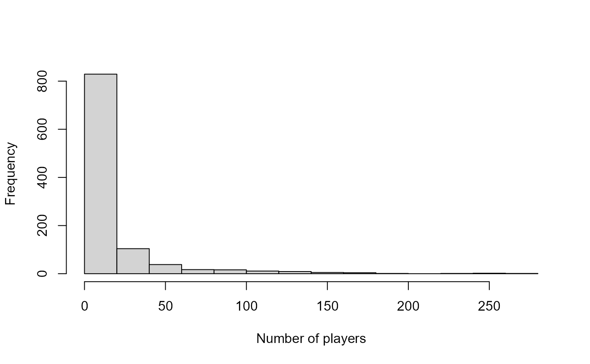

CollegePlaying table
CollegePlaying.RdInformation on schools players attended, by player
Usage
data(CollegePlaying)Format
A data frame with 17350 observations on the following 3 variables.
playerIDPlayer ID code
schoolIDschool ID code
yearIDYear player attended school
Details
This data set reflects a change in the Lahman schema for the 2015 version.
The old SchoolsPlayers table was replaced with
this new table called CollegePlaying.
According to the documentation, this change reflects advances in the compilation of this data, largely led by Ted Turocy. The old table reported college attendance for major league players by listing a start date and end date. The new version has a separate record for each year that a player attended. This allows us to better account for players who attended multiple colleges or skipped a season, as well as to identify teammates.
Source
Lahman, S. (2024) Lahman's Baseball Database, 1871-2023, 2024 version, http://www.seanlahman.com/
Examples
data(CollegePlaying)
head(CollegePlaying)
#> playerID schoolID yearID
#> 1 aardsda01 pennst 2001
#> 2 aardsda01 rice 2002
#> 3 aardsda01 rice 2003
#> 4 abadan01 gamiddl 1992
#> 5 abadan01 gamiddl 1993
#> 6 abbeybe01 vermont 1889
## Q: What are the top universities for producing MLB players?
SPcount <- table(CollegePlaying$schoolID)
SPcount[SPcount>50]
#>
#> alabama arizona arizonast arkansas auburn baylor bostoncoll
#> 155 161 236 108 122 99 71
#> brown byu cacerri california calstfull clemson creighton
#> 111 57 52 162 131 138 51
#> dartmouth duke florida floridast fordham fresnost gatech
#> 64 94 138 152 99 103 137
#> georgetown georgia holycross houston illinois indiana indianast
#> 78 89 167 57 141 58 53
#> iowa kentst kentucky longbeach loyolamary lsu manhattan
#> 59 52 79 96 70 149 71
#> maryland miamifl miamioh michigan michiganst minnesota missouri
#> 60 113 63 191 71 86 72
#> missst ncstate nebraska notredame nwestern ohio ohiost
#> 118 98 88 134 55 54 111
#> oklahoma okstate olemiss oregonst pennst pepperdine princeton
#> 135 132 108 70 58 87 66
#> rice rutgers sandiegost santaclara scarolina setonhall sillinois
#> 83 52 102 112 119 70 57
#> stanford stmarysca tennessee texas texasam tulane txchrist
#> 248 89 92 265 129 74 80
#> txtech ucla umass unc upenn usc vandy
#> 53 180 52 154 87 250 65
#> villanova virginia wake washst wichitast wisconsin wmichigan
#> 86 95 81 74 107 55 68
#> yale
#> 59
library("lattice")
dotplot(SPcount[SPcount>50])

dotplot(sort(SPcount[SPcount>50]))

## Q: How many schools are represented in this dataset?
length(table(CollegePlaying$schoolID))
#> [1] 1038
# Histogram of the number of players from each school who played in MLB:
with(CollegePlaying,
hist(table(schoolID), xlab = "Number of players",
main = ""))
